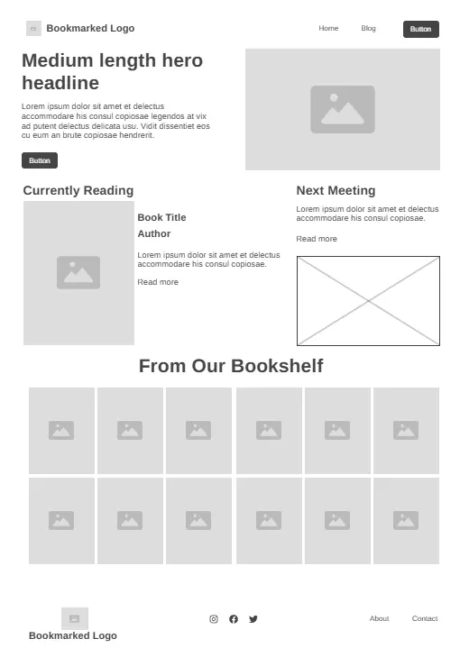
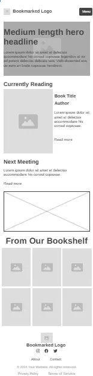

Bookmarked
Reasoning: This name was selected for its modern and memorable quality. It suggests the act of finding something valuable and worth returning to, which aligns perfectly with the goal of a book club: to discover and discuss noteworthy books.
Optional domain availability: bookmarked.club or bookmarkedreads.org
The purpose of the Bookmarked website is to serve as the central online hub for our local reading group. It will provide essential information for members and attract new ones by showcasing our activities. The site will feature a homepage with our current and past reads (the "Bookshelf") and an events calendar, a "Join Us" page with a simple membership form, and a blog for member-led reviews and discussions.
These questions represent the needs of our target audience and will guide the site's content:
The color schema is meant be modern, accessible, and calm.
#52637A (Slate Blue - Primary): Used for the main header and section headings (<h2>). It serves as the main branding color.#B98D75 (Terracotta - Secondary): Used for accents and links (<a>) to provide a warm, inviting contrast.#1A1C1E (On Surface): The primary text color, chosen for its high contrast and readability against the light background.#F8F9FC (Surface): The main page background color. It's a very light, neutral blue-gray that is easy on the eyes.#FDF8F3 (Surface Container): Used for the background of content sections. This soft, warm off-white is easier on the eyes than pure white and evokes the color of book pages.The typography is chosen for a clean, modern, and highly readable experience.
<h1>, <h2>). It provides a clean and friendly yet stylish look.<p>, <li>). It was specifically designed for readability on screens, making it a perfect choice for paragraphs and lists.Wireframe of the homepage's layout in desktop and mobile view
 